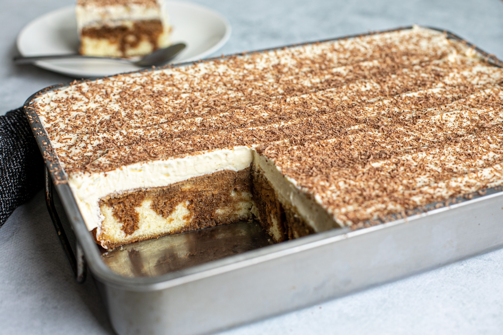

Tiramisu Cake Recipe

Description
This simple tiramisu slab cake not only feeds a crowd, but it’s much
easier to prepare than a regular tiramisu.
Ingredients
- 4 tsp instant espresso powder
- 2 cups boiling water
- 3 x 230g unfilled sponge cakes
- 600ml cream
- 250g mascarpone
- 1/2 tin condensed milk
- 1/2 tsp vanilla essence
- Chocolate, for grating
Step by step
- Combine espresso powder with boiling water and set aside to cool a little.
- In an approx. 32cm x 22cm baking dish, place a single layer of sponge cake, cutting it to fit. Drizzle over cooled espresso liquid.
- In a stand mixer or using handheld beaters, whip cream, mascarpone, condensed milk and vanilla until thick. Spread in a single layer over sponge cake. Refrigerate for one hour to set and chill.
Grate over dark chocolate. Slice into squares and serve.